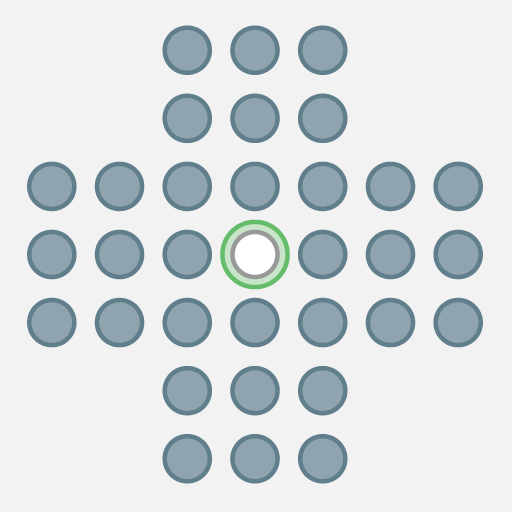

My Projects
I love working on coding projects for class and in my spare time. Here are some of my recent ones:

I love working on coding projects for class and in my spare time. Here are some of my recent ones: